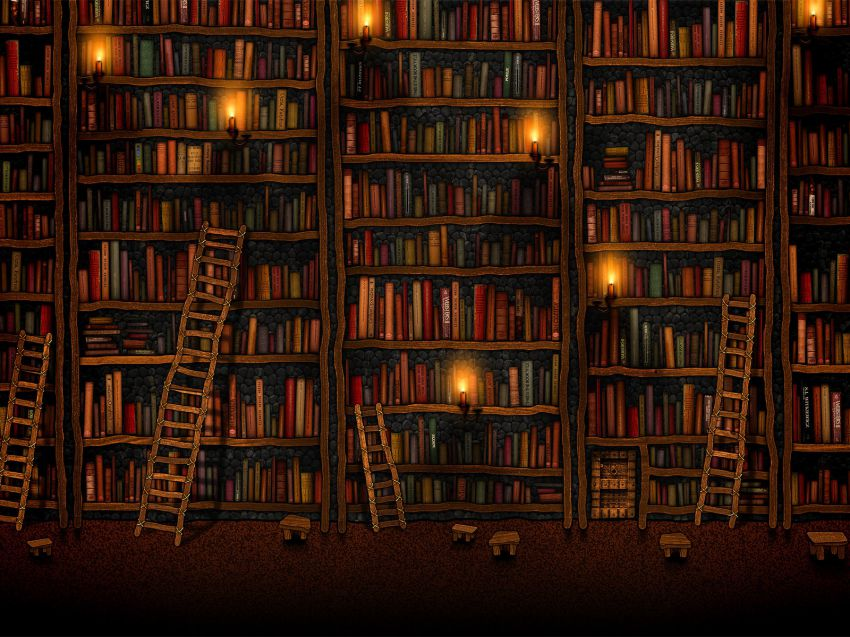

O livro é uma das mais poderosas invenções da humanidade. Com suas páginas repletas de conhecimento, imaginação e história, ele é uma porta de entrada para mundos infinitos. Desde os antigos manuscritos até os modernos e-books, os livros têm sido o veículo primário para transmitir ideias, contar histórias e preservar o conhecimento ao longo das eras.
Um livro pode ser um guia, um amigo, um refúgio e um mestre. Nas suas páginas, podemos explorar terras distantes, aprender novas habilidades, conhecer personagens fascinantes e refletir sobre as complexidades da condição humana. A leitura de um livro é uma jornada única e pessoal, onde cada leitor encontra significado e inspiração de acordo com sua própria experiência e perspectiva.
Além de seu valor cultural e educacional, os livros também têm o poder de transformar vidas. Eles podem abrir mentes, expandir horizontes e inspirar mudanças. Um único livro pode desencadear uma revolução, desafiar ideias preconcebidas ou oferecer conforto em tempos de dificuldade. Ao longo da história, muitos grandes líderes, pensadores e visionários foram moldados e influenciados por livros que leram.
Embora o mundo digital tenha trazido novas formas de consumir conteúdo, o livro físico continua a exercer um fascínio único. A sensação do papel entre os dedos, o cheiro das páginas e a arte da capa contribuem para uma experiência sensorial incomparável. Os livros também têm um poder de conexão, capazes de unir pessoas através da partilha de histórias e ideias.
Além disso, os livros são uma fonte inestimável de conhecimento e aprendizado. Eles cobrem uma ampla gama de tópicos, desde ciência e história até filosofia e arte, oferecendo oportunidades ilimitadas para expansão intelectual e crescimento pessoal. Em um mundo em constante mudança, o hábito da leitura de livros é mais importante do que nunca, proporcionando uma base sólida para a compreensão do mundo ao nosso redor.
Bom dia Verônica

Verônica Torres trabalha no Departamento de Homicídios e de Proteção à Pessoa, da Polícia Civil em São Paulo. É secretária de Carvana, um delegado pouco confiável, e filha de um respeitado policial, que teve um fim trágico e não totalmente esclarecido.
Imperfeitos
Olive se sente como a gêmea azarada da casa: dos acidentes estranhamente inexplicáveis ao fracasso na vida profissional e amorosa ― nada dá certo para ela. Porém, parece que o jogo vira quando sua alergia a frutos do mar a protege de um desastre, já que todos os convidados da festa de casamento da irmã sofrem com intoxicação alimentar.
Os sete maridos de Evelyn Hugo

Com todo o esplendor que só a Hollywood do século passado pode oferecer, esta é uma narrativa inesquecível sobre os sacrifícios que fazemos por amor, o perigo dos segredos e o preço da fama.